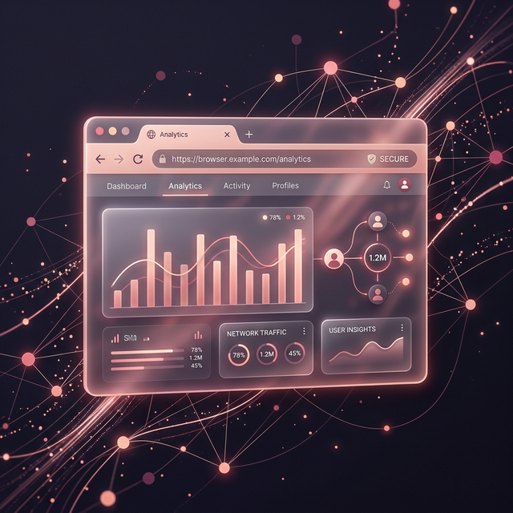

The first browser extension that scientifically tracks your tab switching, session idle times, and calculates your personal Attention Fragmentation Index.
Discover your real browsing habits without compromising privacy. Data stays on your machine.
Silently monitors tab switches, session durations, and notification interruptions.
Calculates your AFI allowing you to see exactly when your multitasking peaks.
Your history is never sent to the cloud. Export directly to CSV for your own research.
A transparent look into how we measure your digital wellbeing entirely on your own device.

Once installed, the extension uses secure Chrome APIs to silently log when you switch tabs, go idle, or become active. All events are timestamped and absolutely no keystrokes or content are recorded.
We perform complex timeline analysis on your sessions. If you switch tabs rapidly, your Attention Fragmentation Index (AFI) increases. Sustained, focused periods lower your score, representing deep work.
Click the extension icon to instantly read your local database and generate intuitive, aesthetic charts. You can easily identify your peak multitasking hours and weekly burnout trends.
Your data never touches a cloud server. 100% of the tracking and mathematical calculations happen securely stored on your own CPU. Browse with total peace of mind knowing your data is yours.